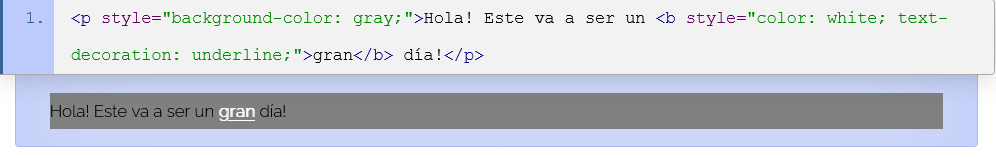
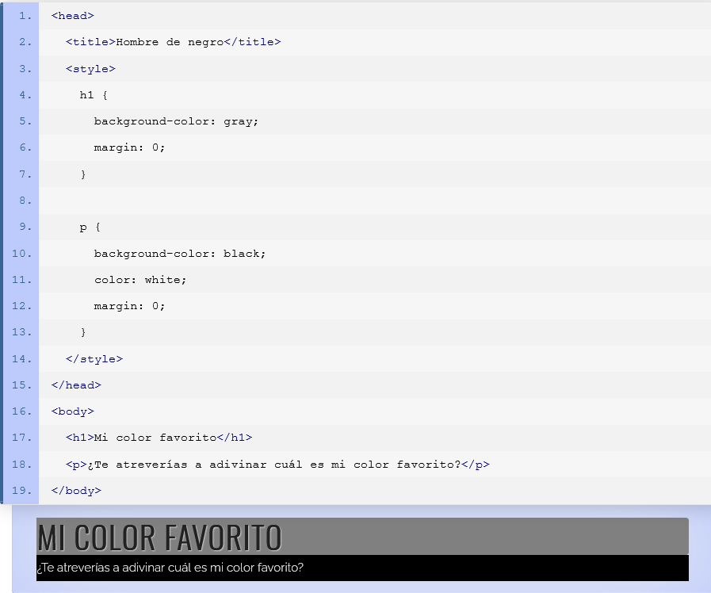
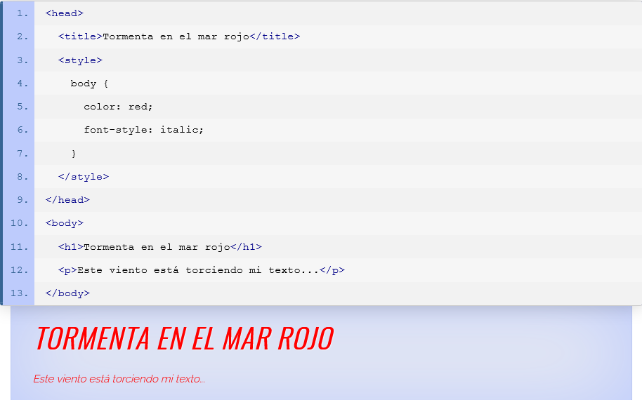
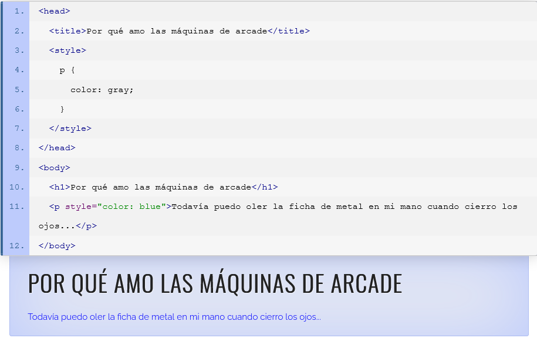

Hojas de estilo en cascada (CSS)
Uso de estilos en un documento
Todo lo que hemos visto hasta ahora no es suficiente para usar nuestros estilos en un documento HTML real, ya que todavía no sabemos donde colocar las declaraciones CSS. El eslabón final en esta cadena es permitir a los agentes de usuario saber dónde pueden encontrar información de estilos para el documento que están interpretando. Y esto es algo que le corresponde a HTML.
Para este propósito, HTML presenta tres métodos para agregar información de estilo a un documento. Éstos son descriptos en las secciones siguientes.
El atributo styles
El uso del atributo style es la forma más fácil y directa de aplicar declaraciones de estilo a un elemento. Este atributo puede tener como contenido, cualquier número de declaraciones de estilo, separadas unas de otras por un punto y coma (";"). Como style es un atributo global, puede ser usado en cualquier elemento de HTML.
El ejemplo siguiente algunas propiedades de estilo son aplicadas a un par de elementos, mediante el atributo style.
Pero a pesar de toda su simplicidad e inmediatez, el uso de este método rompe de alguna manera uno de los principales beneficios de CSS: la posibilidad de crear declaraciones de estilo que pueden ser reutilizadas en tantos elementos como sea posible, algo que se traduce en flexibilidad y portabilidad. Solo imagínate teniendo que aplicar este mismo estilo a cientos de elementos en tus documentos.
Esto no significa que este enfoque no sea útil. De hecho, puede ser muy pertinente usarlo cuando necesitas aplicar un estilo a un solo elemento y por única vez. De cualquier modo, las alternativas siguientes resolverán el problema mencionado en el párrafo anterior.
El elemento style
El elemento style es un contenedor para declaraciones de estilo. Dentro de este elemento podemos arrojar cualquier número de declaraciones de estilo, siempre y cuando estén correctamente organizadas en grupos de selectores. En otras palabras, todos los ejemplos vistos en la sección sobre selectores, pueden ser ubicados en medio de las etiquetas de este elemento.
Este elemento tiene la particularidad de que, cuando es utilizado en su forma tradicional (esto es, sin que el atributo scoped esté presente), sólo puede ser declarado en la sección del encabezado (head) del documento.
El siguiente ejemplo muestra un extracto de un documento donde el elemento style está siendo utilizado para proveer atributos a algunos elementos en el cuerpo (body). Más específicamente, dos selectores de tipo proveen reglas de estilo para los elementos h1 y p.
Archivos externos
La ventaja de utilizar un archivo externo para almacenar información de estilo reside en la posibilidad de compartir ese archivo entre un gran número de documentos. Cuando un documento es cargado, el navegador detecta la referencia al archivo de hojas de estilo, cargando y aplicando los estilos como si fueran parte del documento.
Un archivo externo de hojas de estilo puede ser insertando en el documento con el elemento link, teniendo el valor "text/css" en el atributo type, y el URI del archivo de hojas de estilo en el atributo href. Ten presente que, como style, este elemento solo puede estar ubicado en el bloque de encabezado (head) del documento.
Acerca de los contenidos del archivo de hojas de estilo, debe presentar el mismo tipo de información que encajaría en un elemento style, esto es, cualquier número de declaraciones de estilo organizadas en grupos de selectores. El código siguiente muestra el mismo documento presentado en el ejemplo anterior, solo que aquí la información de estilo se encuentra ubicada en un archivo externo.
Herencia
La herencia es un concepto por el cual los elementos descendientes heredan las propiedades declaradas para sus ancestros. Esto no es otra cosa más que el comportamiento deseado, y evita tener que redefinir las mismas propiedades en los hijos de un elemento. El siguiente ejemplo es prueba de la herencia en CSS. Allí, los elementos heredan todas las propiedades definidas para su ancestro, el cuerpo del documento (body).
El orden de especificidad
Los estilos de diferentes orígenes y selectores son aplicados en un orden específico y unívoco. Este orden de especificidad ayuda a resolver conflictos y hace al sistema más predecible, lo que permite a los autores planear su esquema de estilos con certeza. Por ejemplo, si utilizas el atributo style y, dentro de un elemento style, un selector de clase para definir la misma propiedad de un elemento, la definición en el atributo style prevalecerá.
La siguiente lista muestra el orden de especificidad que se aplica en CSS. Cada forma de aplicar estilos en esta lista prevalecerá cuando compita con aquellos debajo de sí.
- El atributo style.
- El slector de ID.
- El selector de clase.
- El selector de tipo.
- El selector universal.
En el próximo ejemplo, el color del párrafo está siendo definido dos veces: en el atributo style y en el selector de tipo. Como puede preverse, el color definido en el atributo style prevalecerá.
Por supuesto, la lista descripta anteriomente no dice nada acerca de los selectores avanzados, donde las combinaciones llevan al orden de especificidad lejos de la simplicidad. Sin embargo, existe un sistema para trabajar con eso también, pero el alcance de este tutorial evitará que hablemos al respecto. De cualquier modo, no deberías necesitarlo todavía, así que enfócate en los aspectos básicos y continúa con la práctica.
Referencias
de León, D. P. (2020). Hojas de estilo en cascada (CSS). htmlquick. https://www.htmlquick.com/es/tutorials/css.html